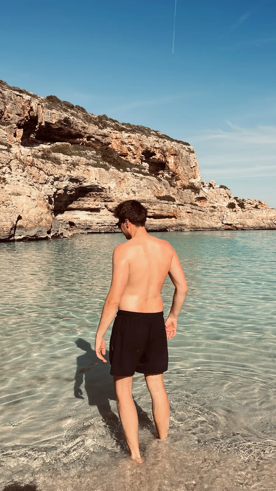
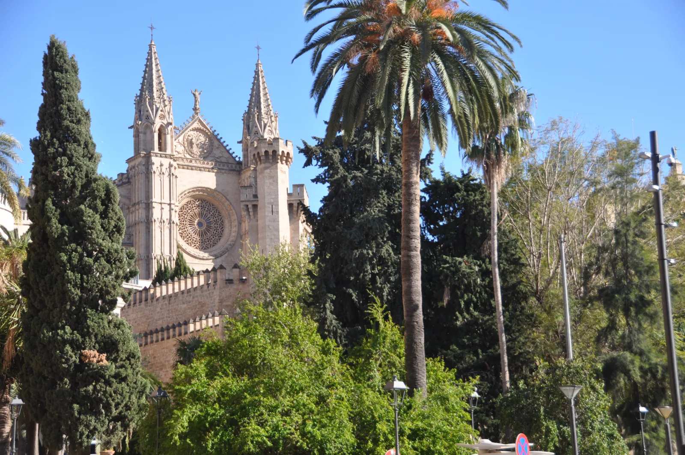
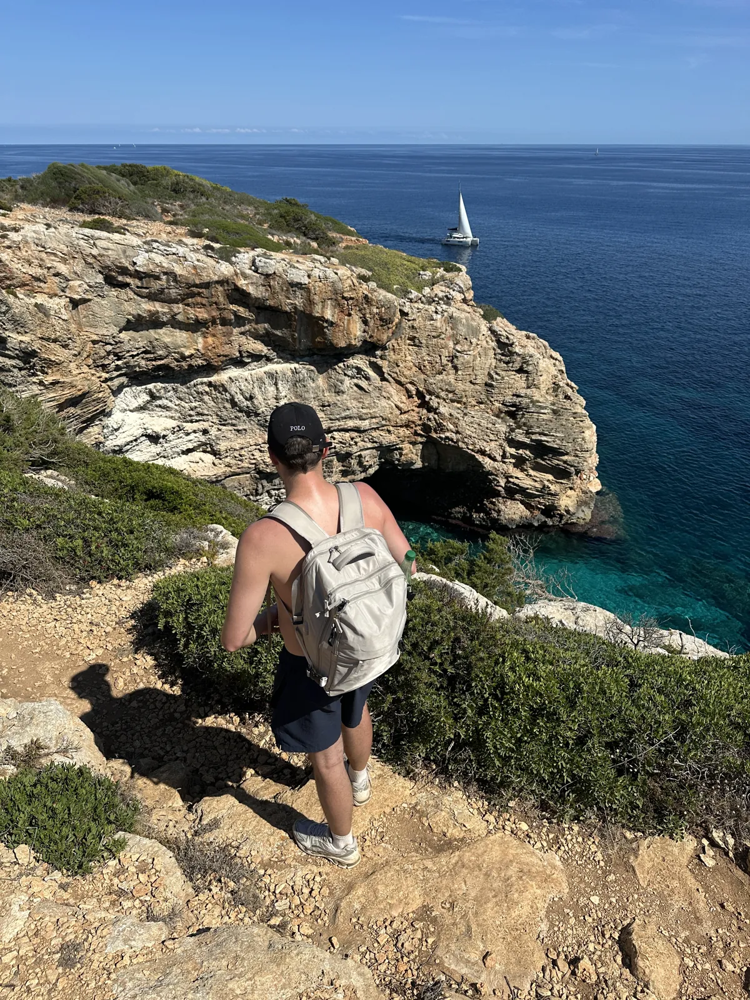
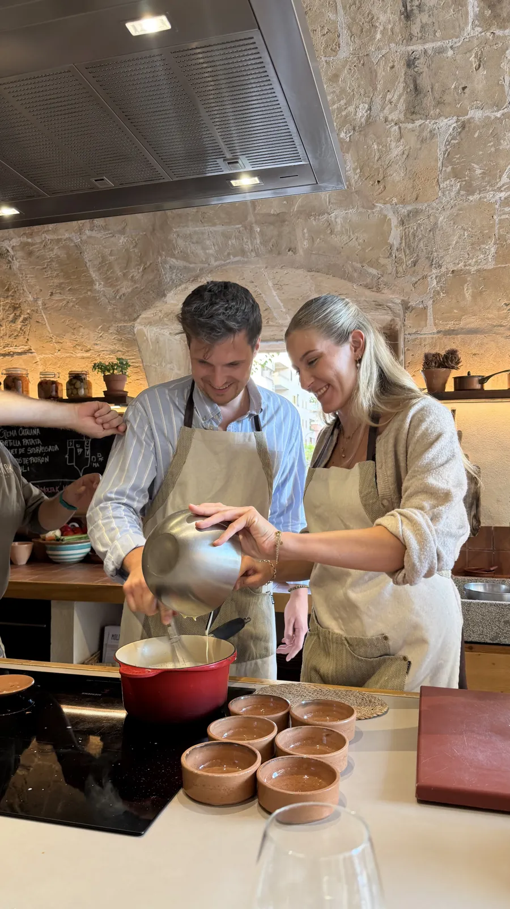
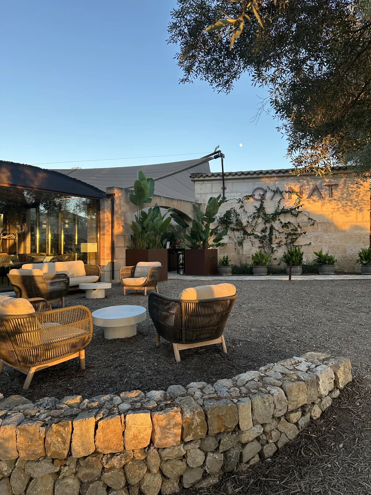
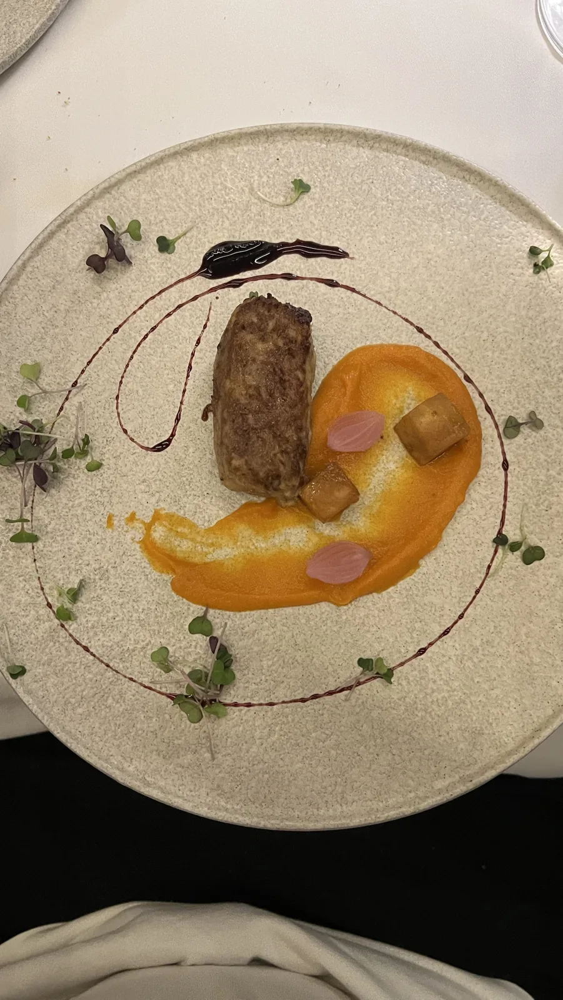
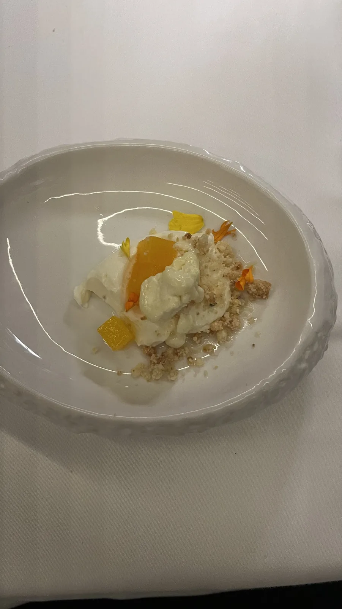

🇪🇸 Mallorca Guide: Roadless Coves, Mountain Villages & Hidden Gems

Table of contents
Mallorca has a reputation, and it has a lot to do with buckets and straws. This guide shows the other island: processions inland, coves with no road to them, a sandstone mountain village and a dinner among olive trees.
You will find getting there and bus tips, the places that are really worth it, what to eat and a five-day plan. All prices and times are guidelines (2026) – especially admissions and timetables change, so check them shortly before you travel.
My story in Mallorca
I visited Mallorca twice in 2026, in April and in September. In April, shortly before Easter, a procession wound through Vilafranca de Bonany: penitents in long robes with pointed hoods, music, silence in between. That is the Mallorca you never get to see from the beach. At Moltak in Palma I learned to cook paella in an old windmill – apron on, big pan, lots of laughter. In Valldemossa I stood at the wall with my camera trying to capture the rooftops against the Tramuntana mountains. Spoiler: it is better live.


This guide contains affiliate links (GetYourGuide, Omio). If you book through them I earn a small commission – you never pay a cent more. Prices and opening hours change – double-check before you go.
At a glance
Getting to Mallorca and around
Arrival
The airport is Palma de Mallorca (PMI). Buses run from there to the city centre (EMT airport line; around €5 a trip according to operators, check lines and prices beforehand) – from the centre it is a short walk into the old town.
Bus
Inside Palma the EMT buses (single about €2 cash). Between towns the TIB intercity buses: short trips from about €3, longer ones up to around €10–13.50 cash; with the rechargeable card they are cheaper or, according to providers, partly free – this changes, so check the TIB site first. To Valldemossa runs line 210 from the Estació Intermodal bus station (about 30–40 minutes).
Historic train to Sóller
The wooden train Palma–Sóller costs about €22–23 one way according to operators, the tram onward to Port de Sóller about €9–10. Combined tickets are usually cheaper. Neither is covered by the free-travel cards.
Rental car
For coves like Cala Màrmols or s'Almunia and the villages of the Tramuntana a car pays off. In high season parking at the highlights fills early – Noel’s advice: start early.
1. Coves you have to earn
The best coves in the south-east have no kiosk and no sunbed rental. Instead you get turquoise water and usually fewer people than on the big beaches.
Cala Màrmols💎 Hidden gem
A cove in the south with no road and no kiosk – you only get there on foot or by boat. The scramble down over the rocks is worth it: turquoise water and a rock arch as if someone had put it there. The walk from the lighthouse at Cap de ses Salines takes roughly 1 to 2 hours each way depending on your pace and is stony throughout.
Tip: Sturdy shoes instead of flip-flops, plenty of water, hat and sunscreen – there is hardly any shade. In summer start early. Stay on the official path: visitors report that an owner has already complained about a shortcut across private land. And take a rucksack instead of a beach tote so you have your hands free on the steep descent.

Cala s'Almunia💎 Hidden gem
At Cala s'Almunia the fishermen’s old boathouses sit right on the water. It is more a small rocky cove than a sandy beach – but crystal clear and good for snorkelling. Access is via steps, and the walk from the car park takes about 10–20 minutes according to visitors.
Tip: Bring water shoes, the rocks are sharp. In high summer the cove is no secret any more – early morning or spring/September gives you much more space.
Es Pontàs💎 Hidden gem
A huge rock arch in the sea that looks like a bridge. From the viewpoint (Mirador) you see it and the cliff coast – most beautiful at sunrise or sunset. The walk from Cala Santanyí is short, about 10–15 minutes, but rocky.
Tip: Enter “Mirador del Pontàs” in Google Maps – the entry “Es Pontàs” leads to a wrong spot or private land according to visitors. Swim only in calm water and only if you are a strong swimmer.
2. Palma without rushing
La Seu – Palma Cathedral
La Seu, Palma’s Gothic cathedral, stands right by the sea and looks almost painted between the palm trees. From a rooftop terrace in the old town it lies at your feet.
Tip: Admission and opening times change with the season and services – check the official site and book ahead in high season.
Paella cooking class at Moltak💎 Hidden gem
At Moltak I learned to cook paella in an old windmill – apron on, big pan, lots of laughter. On Google Moltak has a 5.0-star rating from around 800 reviews; guests mainly praise the relaxed atmosphere and that you can take the recipes home.
Tip: Book ahead – evening slots especially are popular. Plan a day without a long excursion for it.

3. Valldemossa & the Tramuntana
Valldemossa
A mountain village of sandstone where Chopin spent the winter of 1838/39 – together with George Sand in the cells of the charterhouse. There is a museum with Chopin’s piano and manuscripts as well as a baroque church and an old pharmacy. The lanes are pretty but crowded around lunchtime.
Tip: Be there before 9:30 am – then you have the village almost to yourself. From about 11 am to 2 pm (April–October) tour groups arrive. Parking in the village is scarce and fills early in high summer, which is why the bus from Palma is more relaxed. Try a coca de patata (soft potato pastry) from a small bakery.
Sóller & the historic train
The old wooden train from Palma runs into the mountains to Sóller, from there a tram continues to the coast at Port de Sóller. Relaxed and doable without a rental car – a good plan if you do not want to drive.
Serra de Tramuntana & GR 221
The mountain range in the north-west is about 90 kilometres long, up to roughly 1,500 metres high and a UNESCO World Heritage Site since 2011. Villages such as Deià, Fornalutx or Estellencs can be reached by car; the long-distance trail GR 221 (the “dry stone route”) runs around 160 kilometres through the range.
Tip: The roads are winding and narrow – drive early and allow more time than the satnav says.
Sa Calobra & Torrent de Pareis
A gorge where the Torrent de Pareis meets the sea and ends at a pebble cove – one of the natural highlights of the west coast. The approach is a serpentine road, and in high season it is crowded.
Tip: Plan Sa Calobra as a day of its own, ideally outside peak holiday season.
4. Eating & villages inland
This is where you meet the Mallorca that does not need a beach: markets, village bakeries and long dinners in the countryside. A typical souvenir: the ensaïmada, the lard pastry you carry home as a spiral in a box.
Qanat de Treurer💎 Hidden gem
Fine dining among olive trees near Algaida, with a terrace that glows at golden hour. On Google the restaurant has 4.8 stars (around 60 reviews); guests particularly mention the terrace, the barbecue night and the olive-oil tour.
Tip: Reserve, and arrive early enough to catch the terrace at golden hour.



Wednesday market in Vilafranca de Bonany
At the Wednesday market in Vilafranca there are olives, sardines and spices, and fresh pastry at the village bakery. In April, shortly before Easter, a procession passed through here – a Mallorca you never see at the beach.
Tip: Markets are best early in the morning. Holy Week is fascinating but streets and parking can be closed or full then.
Where to stay
- Palma old town: perfect without a car, close to the cathedral, cafés and buses.
- Sóller / Port de Sóller: mountains and coast, good for hikers and the historic train.
- South-east (Santanyí, Cala Santanyí): base for Cala Màrmols, s'Almunia and Es Pontàs – with a car.
- Inland (Algaida, Vilafranca): quiet, country hotels and fincas – ideal for markets and food.
Tip: if you have two weeks, combine Palma with a quieter base in the south or in the mountains. With less time, sleep in Palma and do day trips.
What makes Mallorca special
Behind the party beaches lies an island with its own language – Mallorquin, a form of Catalan –, with almond blossom in February and the Tramuntana mountains. Around 3,000 years ago people already built stone towers here, the talayots; remains of them still stand inland. In 1229 King Jaume I of Aragón conquered the island from the Moors. And in winter 1838/39 Frédéric Chopin and George Sand lived in the charterhouse of Valldemossa – a rather rainy winter, as Sand later wrote.
My conclusion: Mallorca can do far more than beach and sangria. Go inland, hike to the coves without a road and plan at least one evening for really good food.
Your plan
Day 1: Day 1 – Palma
- Morning – La Seu cathedral and old town lanes
- Midday – lunch in the old town, then a rooftop terrace with a view of the cathedral
- Evening – paella cooking class at Moltak (book ahead)
Day 2: Day 2 – Valldemossa & Tramuntana
- Early – to Valldemossa, arrive before 9:30 am
- Morning – charterhouse, Chopin cells, lanes
- Afternoon – Tramuntana villages like Deià or Fornalutx, or Sóller by wooden train
Day 3: Day 3 – South-east coves
- Early – hike to Cala Màrmols (lighthouse at Cap de ses Salines)
- Afternoon – Cala s'Almunia or Es Pontàs at sunset
Day 4: Day 4 – Inland
- Morning – Wednesday market in Vilafranca (if it is Wednesday), village bakery
- Evening – dinner at Qanat de Treurer (reserve, closed Mondays)
Day 5: Day 5 – Sa Calobra or a break
- All day – Sa Calobra and Torrent de Pareis, or a calm day in Palma with an ensaïmada to take home
FAQ
How many days do you need on Mallorca?
Five days cover Palma, Tramuntana, the south-east coves and the interior – with a rental car. Without a car, 3–4 days with Palma, Sóller and Valldemossa are realistic.
When is the best time to visit?
April to June and September to October: pleasantly warm and less crowded. Noel was there in April and September. In February the almond trees bloom.
Do I need a car?
For Cala Màrmols, s'Almunia, Es Pontàs and the interior yes – public connections there are thin. For Palma, Valldemossa (bus 210) and Sóller (train) you can manage without.
Is Cala Màrmols suitable for children?
Rather not: the path is long, stony and shadeless, the descent steep, and there are neither toilets nor a kiosk. Easier-to-reach beaches suit families better.
What should I definitely eat?
Ensaïmada (lard pastry), coca de patata in Valldemossa, olives and sardines from the market and paella – ideally cooked yourself in a class.
🗺️ All places on my map → More guides and reels on Instagram: @hiddengem.atlas
Share this guide: On WhatsApp